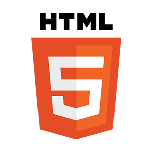
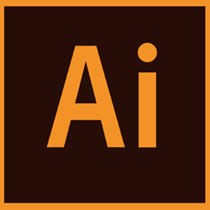
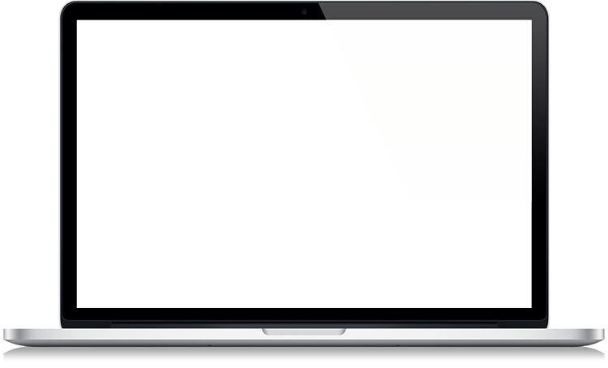
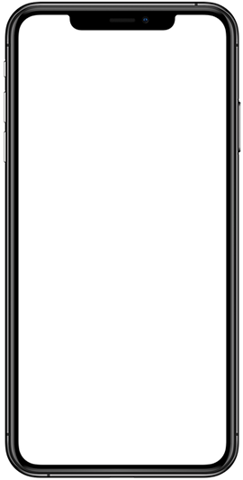

PROFILE
-
JAEMIN YOON
윤재민
-
생년월일
2000.04.11
-
전화번호
010-4729-6023
-
이메일
wwoals14@naver.com
-
보유기술
- html5
 css3
css3 javascript
javascript jquery
jquery json
json wordpress
wordpress photoshop
photoshop- illustrator
기업형pc
-
VISIT
- 기업형PC 웹사이트
롯데워터파크 홈페이지 PC
- 기존 웹사이트의 헤딩 부제,HTML5와 CSS3로 구현되긴 하였지만 트랜드에 맞지 않다고 파악하여
트랜드를 초점을 두고 새롭게 구축하였습니다.
-
- COLOR
-
-
- 제작기간
- 약5주
-
- 사용폰트
- Open Sans, Noto Sans KR
-
- 제작스킬
- HTML5, CSS3, JavaScript, jQuery, JSON, AJAX, PHP, MySQL, Adobe Photoshop
W3C 웹표준 마크업 검사, 웹접근성검사(K-WAH), 크로스브라우징 완료


기업형mobile


-
VISIT
- 기업형MOBILE
롯데워터파크 홈페이지 MOBILE
- PC용으로 구현된 기업형 동아건설 홈페이지를 모바일 기기 사용을 위한 UI를 적용하여 마우스가 아닌
사용자의 터치 이벤트를 중점적으로 구현했으며, PC버전과는 다르게 사용자 경험을 고려하여 새롭게 구성하였습니다.
-
- COLOR
-
-
- 제작기간
- 약2주
-
- 사용폰트
- Open Sans, Noto Sans KR
-
- 제작스킬
- HTML5, CSS3, JavaScript, jQuery, JSON, AJAX, PHP, MySQL, Adobe Photoshop
W3C 웹표준 마크업 검사, 웹접근성검사(K-WAH), 크로스브라우징 완료
WORDPRESS
-
VISIT
- WORDPRESS 웹사이트
BENTLEY MOTORS 웹사이트
- 가장 널리 사용되는 오프소스 CMS 중 워드프레스를 사용하여 구현한 반응형 웹사이트로,
워드프레스의 테마와 플러그인을 사용하여 브랜드 컨셉에 맞는 디자인과 레이아웃을 구현하였습니다.
-
- COLOR
-
-
- 제작기간
- 약3일
-
- 사용폰트
- Open Sans, Noto Sans KR
-
- 제작스킬
- Wordpress, HTML5, CSS3, JavaScript, jQuery, Adobe Photoshop, illustrator,
W3C 웹표준 통합 마크업 검사(html/css), 웹접근성검사(K-WAH), 크로스브라우징 완료